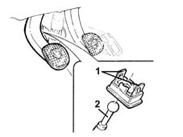
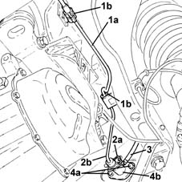

1820B20 (Pump) - MASTER CYLINDER R.R.
- Path
- Procedures > 18 CLUTCH > 1820 CLUTCH RELEASE CONTROLS > 1820B HYDRAULIC CLUTCH SYSTEM > 1820B20 (Pump) - MASTER CYLINDER R.R.
- Kind
- repair procedure (removal / refitting; the operation number is the code)
- Applies to
- all engines; all production periods
- Interactive page
- https://sloeber94.github.io/elrnDB-lYpsln/en/#/2429101
Applies to: all engines; all production periods
 Removing
Removing
 Refitting
RefittingPosition the vehicle on the ramp.
Proceed with removal 4450B02 left front wheel r r .
Proceed with removal 7055B90 Left front WHEEL ARCH LINER - R.R. .
1. Working from the passenger compartment, place the clutch pedal in the end of travel position then release the retainers securing the locking device to the pedal.
2. Release the master cylinder push rod from the locking device.

Applies to: all engines; all production periods
1. Release the pipe between the master cylinder and the clutch operating cylinder (1a) from the bands (1b) on the flexible mounting for the power unit gearbox side rigid support.
2. Lift up the retaining clip (2a) and disconnect the pipe between the master cylinder and the operating cylinder (2b), master cylinder side.
3. Loosen the band and disconnect the flexible pipe from the clutch reservoir to the master cylinder, master cylinder side.
4. Undo the bolts (4a) and remove the master cylinder (4b).

Applies to: all engines; all production periods
Refitting
RemovingPlace the clutch master cylinder back in its housing and fix it tightening the bolts to the recommended torque.
 | Fastening | Component | Ø | Value (daNm) |
|---|---|---|---|---|
- | Bolt | CLUTCH FLUID MASTER CYLINDER | M6 | (Bodyshell side) 0.6 ÷ 1.0 |
Connect the flexible pipe from the clutch reservoir to the master cylinder, master cylinder side and tighten the clutch.
Fit the pipe between the master cylinder and the operating cylinder fully home in its seat on the clutch master cylinder and secure with the retaining clip.
Fasten the pipe between the master cylinder and the clutch operating cylinder on the power unit gearbox side rigid support flexible mounting using the bands.
Connect the master cylinder push rod to the locking device.
Connect the clutch pedal to the locking device using the clips.
Proceed with refitting 0010T64 brake and or clutch fluid check level and top up as necessary .
Proceed with refitting 0010T67 hydraulic clutch system bleed air .
Proceed with refitting 7055B90 Left front WHEEL ARCH LINER - R.R. .
Proceed with refitting 4450B02 left front wheel r r .
Remove the car from the ramps.
Topics linked from this page (4)
- 0010T64 brake and or clutch fluid check level and top up as necessary
- 0010T67 hydraulic clutch system bleed air
- 4450B02 left front wheel r r
- 7055B90 Left front WHEEL ARCH LINER - R.R.